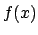
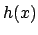
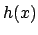

Next: 5.9 Example 9: Simple Up: 5. Examples Previous: 5.7 Example 7: Bar Contents Index
The fit command works in Pyxplot in essentially the same way as in
gnuplot (see section 2.7). In this example, we take a series of
data points, and first fit parabolas through them. For the first fit, ,
we do not take the errorbars into account; in the second,  , we do. Then,
we use the spline command to fit a spline, , through the same
data (see section 3.8). Strong oscillation is seen in this
example because of the angular nature of the data; it is not well-fit by a
spline. The output is shown in figure 5.8.
, we do. Then,
we use the spline command to fit a spline, , through the same
data (see section 3.8). Strong oscillation is seen in this
example because of the angular nature of the data; it is not well-fit by a
spline. The output is shown in figure 5.8.
Pyxplot Script:
examples/example8